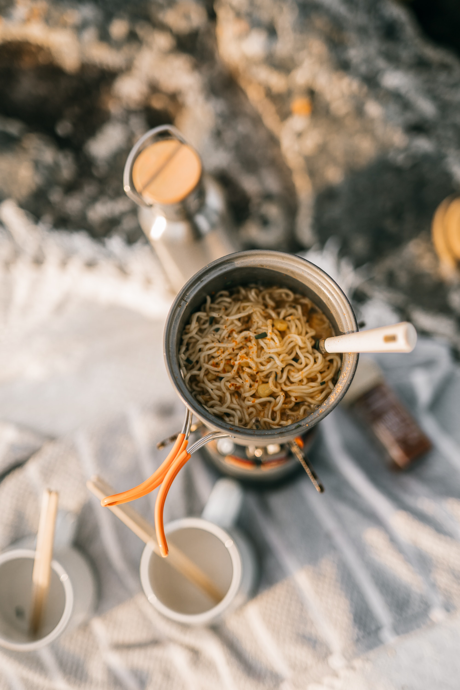

Healthier Ramen

Spruce up that college ramen diet with a few healthier ingredients!
I think we all know that ramen probably isn't the healthiest choice. But, sometimes those college budgets
can't even allow for the dollar menu at McDonalds. That is where this recipe comes in! Following this guide
will help you feel like you're eating at a top noch restaraunt in no time! Well... maybe feeling like picking
from the appetizers at least.
Adding a few carrots, some eggs, and some mushrooms, will give you a bit of nutriton and hopefully bring in some new flavors to
that boring bowl or ramen. So, pick your favorite flavor of ramen and lets add these savory bits of deliciousness!
Here is the short list of ingredients
- 2 1/2 cups of water
- 1 carrot, sliced
- 4 fresh mushrooms, sliced
- 1 (3 ounce) package of ramen noodle pasta with the flavor packet
- 1 egg, lightly beaten
- 1/4 cup of milk (optional)
Follow this simple step to deliciousness!
- In a medium saucepan bring the water to a boil over high heat. Stir in the carrot and mushrooms and boil for about 7 minutes.
Add the noodles and the flavoring packet; stir to break up the noodles. Reduce heat to medium and simmer for 3 minutes.
Slowly pour in the egg and stir for 30 seconds until the egg has cooked. Stir in the milk.
Home